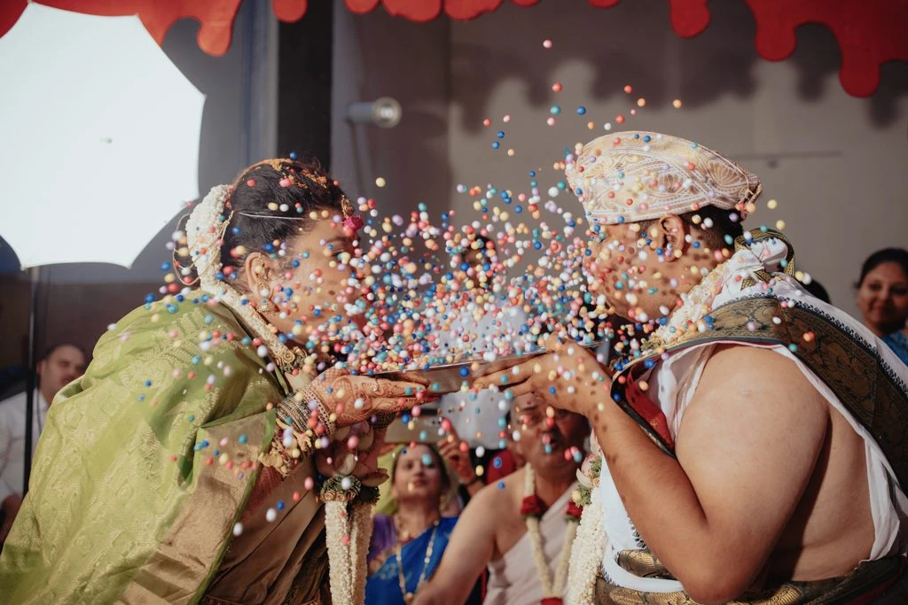

“They were organized, professional, and punctual—all qualities that are crucial for wedding ceremonies.”
Read their full wordsClose
We have received the best photography and videography service available to date from Nuptial Diaries. Only thanks to Nuptial Diaries' efforts were we able to capture the greatest photos and memories. First off, the team as a whole did an amazing job of coordinating the acceptance and delivery of the images, videos, films, and albums. Second, the team that photographed our memories was the most comfortable to work with; they were organized, professional, and punctual—all qualities that are crucial for wedding ceremonies. Thirdly, the editing is of exceptional quality. We can't look away from our wedding video! Their brand name has been justified, and when paired with music, it almost feels like a real movie.